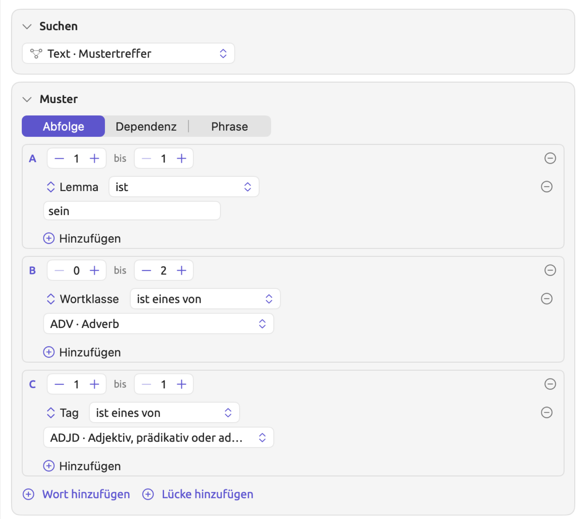
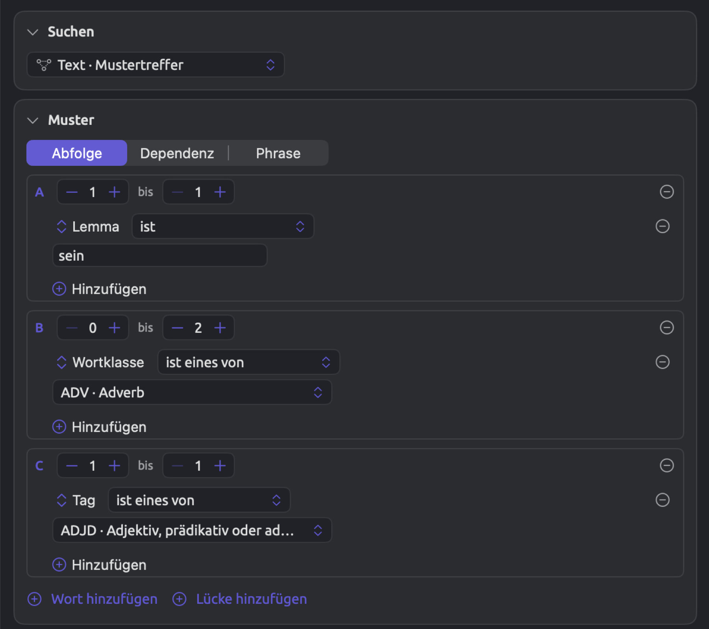
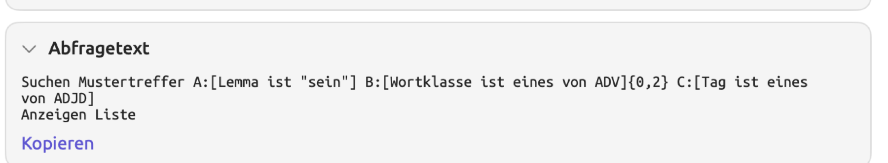
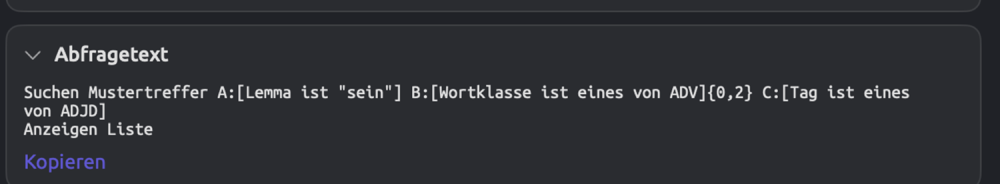
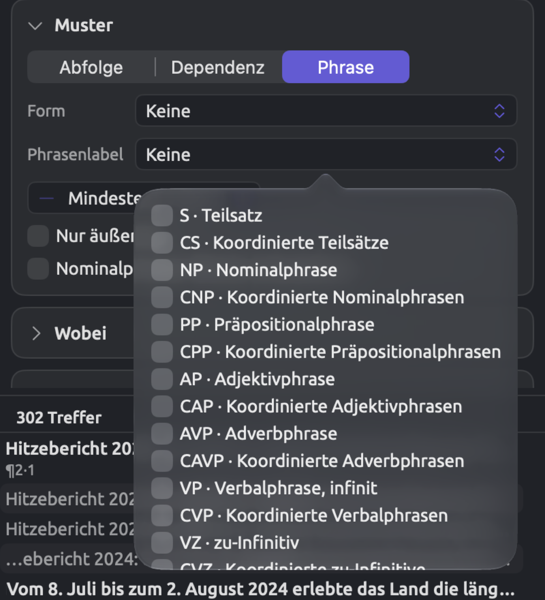
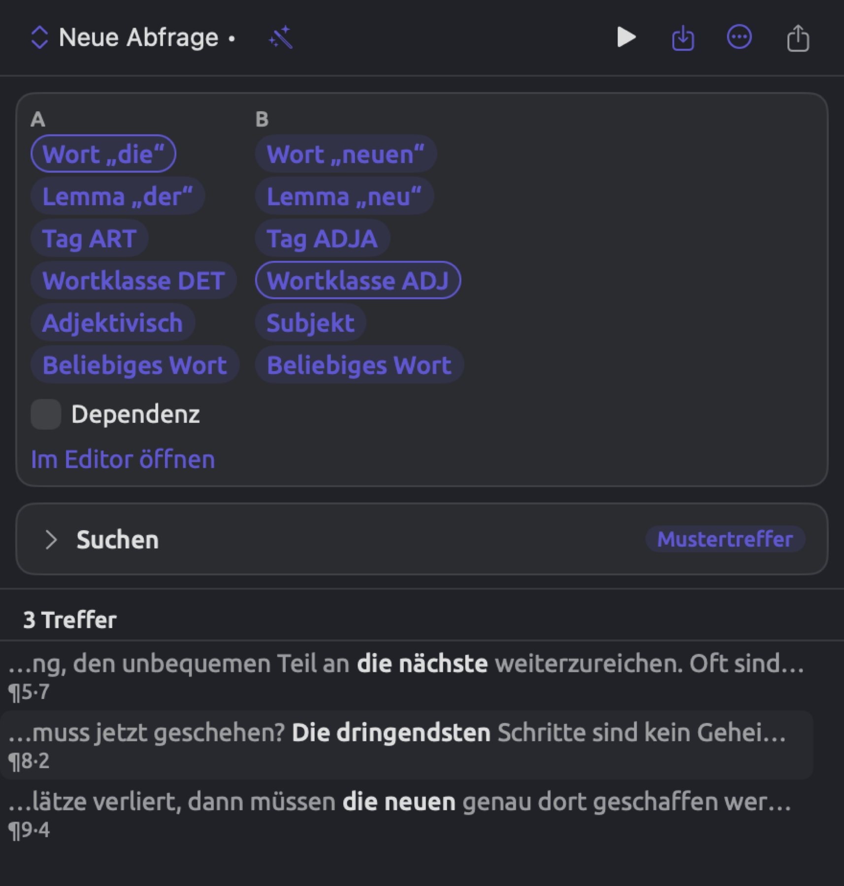
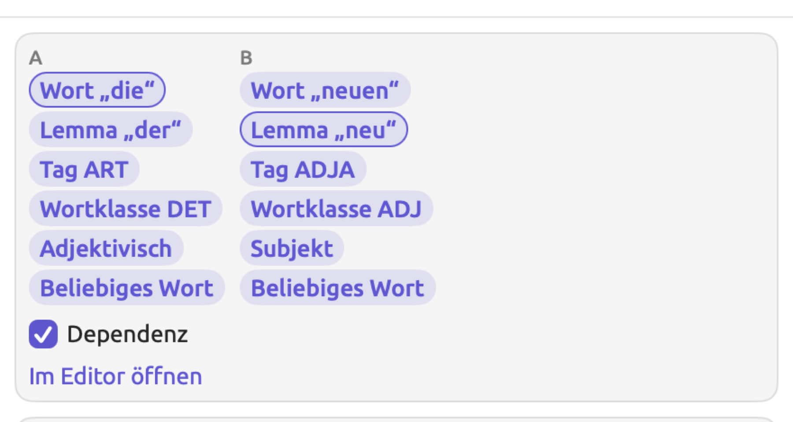
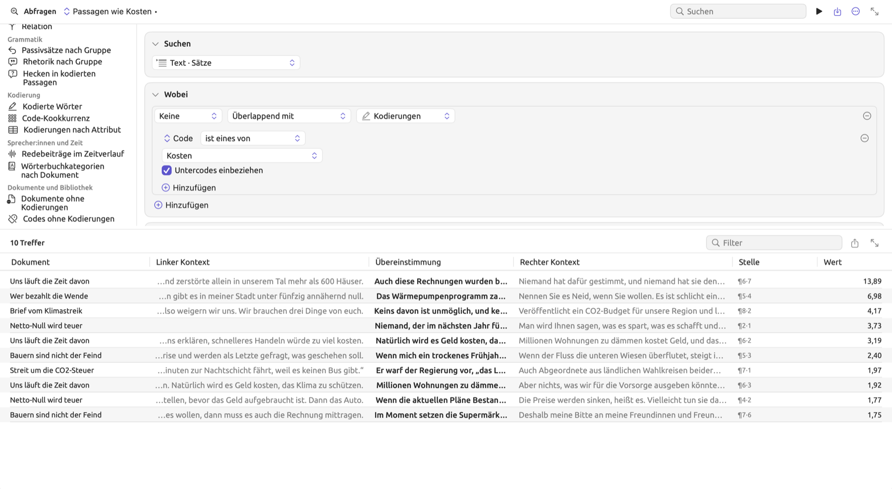
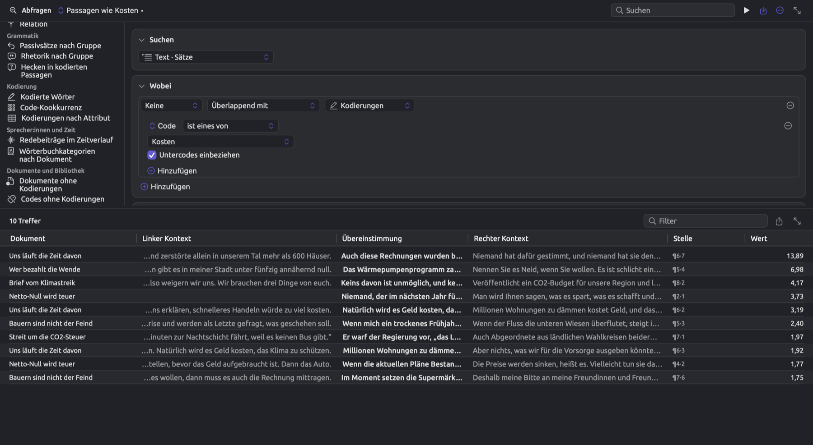

Abfragemuster und Erkundung
Die Fragen einer Studie betreffen oft eher Verbindungen von Wörtern als einzelne Wörter. Vielleicht möchten Sie zum Beispiel wissen, wie die Aktivisten über Menschen und Pläne sprechen. Mit Mustern, die mehrere Wörter umfassen, suchen Sie nach Konstruktionen wie ist radikal, die Rechnung mittragen oder die Zuständigkeit für die Betreuung allein lebender älterer Menschen. In keiner der drei Konstruktionen trägt ein einzelnes Wort für sich die Bedeutung, nach der Sie suchen.
Muster helfen vor allem dann, wenn es Ihnen um die Konstruktion geht und weniger um die einzelnen Wörter darin. Eine Suche nach dem Wort Rechnung liefert zum Beispiel jedes Vorkommen von Rechnung im Projekt, gleich in welchem Zusammenhang. Eine Suche nach Verben mit Rechnung als Objekt liefert nur die Rechnungen, mit denen jemand etwas tut, und zeigt Ihnen zugleich genau, welche Verben die Schreibenden dafür wählen. Die Wörter eines Musters müssen nicht festgelegt sein; jedes Wort kann offen bleiben und etwa für ein beliebiges Adjektiv oder eine beliebige Form eines Verbs stehen. So entstehen flexible Muster, die viele Varianten erfassen, die man leicht übersieht, wenn man sie einzeln sucht. Über Konstruktionen zu bestimmten Begriffen hinaus erfassen Muster auch Stilmerkmale, etwa lange Nominalphrasen, die typisch für einen dichten, förmlichen Stil sind.
Abfrage aus Auswahl macht aus Wörtern, die Sie in der Leseansicht ausgewählt haben, ein Muster, das Sie dann Wort für Wort erweitern. Passagen wie ein Code sucht in den Dokumenten nach Sätzen, die den mit einem bestimmten Code kodierten Passagen ähneln, diesen Code selbst aber nicht tragen. Beide Funktionen und die Vorlagen, fertige Abfragen für häufige Fragen, beschreibt dieses Kapitel weiter unten.
Die Grundlagen, die für alle Abfragen gleichermaßen gelten, beschreibt Kapitel 15, Eine Abfrage erstellen ausführlich. Wie Sie Abfrageergebnisse lesen und exportieren, erklärt Kapitel 16, Abfrageergebnisse und Statistik. Die folgenden Beispiele stammen aus „Klimadebatte“, dem mitgelieferten Beispielprojekt dieses Handbuchs. Wenn Sie das Projekt mit Ablage ▸ Importieren ▸ Beispielprojekt importieren, funktioniert jedes Muster sofort, denn seine Dokumente sind bereits indiziert.
Musterabfragen
Eine Musterabfrage findet Mustertreffer, also Textstrecken innerhalb eines einzelnen Satzes, die Ihrer Beschreibung entsprechen. Es gibt drei Arten von Mustern, nämlich Abfolge, Dependenz und Phrase.
- Abfolge beschreibt die Wörter nach ihrer Position und Reihenfolge. Ein Beispiel wäre eine Form von sein, gefolgt von bis zu zwei Adverbien und dann einem Adjektiv.
- Dependenz beschreibt die Wörter danach, wie sie grammatisch verbunden sind, unabhängig von ihrer Position. Beispiele sind Verben mit ihren Objekten oder Nomen mit den Adjektiven, die sie beschreiben.
- Phrase beschreibt ganze Phrasen anhand der Phrasenstruktur des Satzes. Ein Beispiel wäre jede Nominalphrase mit sechs oder mehr Wörtern.
Ob Sie ein Abfolgemuster oder eine der anderen Arten wählen, hängt davon ab, ob Ihre Konstruktion auf der Stellung der Wörter zueinander beruht. Ein Abfolgemuster eignet sich am besten für kurze Konstruktionen, deren Wörter in fester Reihenfolge direkt aufeinanderfolgen. Dependenzmuster passen zu Wörtern, die nicht nebeneinanderstehen müssen, oder zu Wörtern, deren grammatische Beziehung selbst Gegenstand der Frage ist. Phrasenmuster helfen bei Fragen nach Art und Größe von Phrasen statt nach einzelnen Wörtern.
Musterabfragen nutzen die grammatische Analyse, die für jedes Dokument bereits vorliegt. Sie arbeiten deshalb nur mit indizierten Dokumenten. Sind nicht alle Dokumente im Geltungsbereich indiziert, zeigt eine Angabe wie 12 von 14 neben der Trefferzahl, wie viele Dokumente die Abfrage tatsächlich verarbeitet hat. Mehr zur Indizierung finden Sie in Kapitel 21, Analyse und Indizierung.
In den Listen einer Musterabfrage enthält die Spalte Übereinstimmung zwischen den Spalten Linker Kontext und Rechter Kontext die gefundenen Wörter. Regeln in der Bedingung Wobei gelten für die gefundenen Wörter als Ganzes. Solche Regeln prüfen Eigenschaften wie den Text oder die Länge des Treffers, seinen Satz, seinen Absatz oder sein Dokument sowie Kontexte wie Innerhalb einer Kodierung.
Anzeigen bietet alle Ergebnisarten außer Schlüsselwörter. Musterabfragen, bei denen Anzeigen auf Liste steht, lassen sich als Lenses sichern, die ihre Treffer in der Leseansicht annotieren, während Sie lesen und kodieren, oder in Analysatoren umwandeln. Mehr dazu finden Sie in Kapitel 18, Abfrageergebnisse nutzen.
Eine Musterabfrage beginnen
Muster lassen sich überall aufbauen, wo Sie Abfragen erstellen können. Die Abfrage eines Dokuments durchsucht nur dieses eine Dokument; dort können Sie also gut ausprobieren, wie Sie Ihr Muster aufbauen. In der Ansicht Abfragen eines Sets oder Projekts stehen die Bedingungen neben den gesicherten Abfragen und Vorlagen; die Ergebnisse füllen hier den Bereich unter den Bedingungen und folgen Ihrem Muster, während Sie es ändern. Bei größeren Sets oder Projekten warten die Ergebnisse, bis Sie die Abfrage ausführen. Dazu klicken Sie in der Leiste oben auf die Schaltfläche Abfrage ausführen (Dreieck-Symbol) oder drücken ⌘R.
So beginnen Sie eine Musterabfrage:
- Öffnen Sie eine Abfrage. Für ein einzelnes Dokument klicken Sie im Inspektor auf Multimodus und dann auf Abfrage. Für ein Set klicken Sie in der Reihe von Schaltflächen oben in seinem Tab auf Abfragen, oder Sie wählen Fenster ▸ Abfragen und dort den Geltungsbereich.
- Wählen Sie in der Bedingung Suchen im Menü den Eintrag Text · Mustertreffer. Unter Suchen erscheint eine Bedingung Muster mit einer Abfolge aus zwei leeren Wörtern, A und B.
- Wählen Sie in der Bedingung Muster den Eintrag Abfolge, Dependenz oder Phrase.
Abfolgemuster
Ein Abfolgemuster ist eine Liste von Schritten, die von links nach rechts gelesen wird. Jeder Schritt nimmt eine bestimmte Zahl aufeinanderfolgender Wörter auf (auch null); ein Wortschritt hat Regeln für seine Wörter und trägt einen Buchstaben (A, B, C und so weiter). Die andere Art von Schritt, ohne Regeln, heißt Lücke und wird mit Auslassungspunkten (…) angezeigt; eine Lücke steht für ein beliebiges Wort oder eine beliebige Folge von Wörtern zwischen den Wörtern, auf die es Ihnen ankommt.
Die Schritte erscheinen als umrandete Kästen in der Bedingung Muster, ein Kasten pro Schritt. Die oberste Zeile eines Kastens zeigt den Buchstaben oder die Auslassungspunkte, danach zwei Zahlenfelder (verbunden durch bis) und eine Schaltfläche zum Entfernen (deaktiviert, solange nur ein Schritt übrig ist). Bei einem Wortschritt folgen die Regeln unter seiner obersten Zeile. Das Menü Hinzufügen, mit dem Sie einem Schritt Regeln hinzufügen, ist dasselbe wie das Menü Hinzufügen in der Bedingung Wobei. Unter allen vorhandenen Schritten stehen die Schaltflächen Wort hinzufügen und Lücke hinzufügen.
Eine Abfolge aufbauen
Die Aktivisten in „Klimadebatte“ beschreiben Menschen und Pläne gern mit einer Form des Verbs sein und einem darauf folgenden Adjektiv, etwa in Nichts davon ist radikal. Gelegentlich stehen Adverbien dazwischen, etwa größtenteils noch in sind größtenteils noch zu jung. Die Abbildung unten zeigt diese Abfolge im Set „Aktivisten“. In Schritt A lautet die Regel Lemma ist sein; Schritt A passt also auf jede Form von sein. In Schritt B lautet die Regel Wortklasse ist eines von ADV · Adverb, und der Schritt steht auf 0 bis 2; er nimmt also null, ein oder zwei Wörter dieser Klasse auf. In Schritt C lautet die Regel Tag ist eines von ADJD · Adjektiv, prädikativ oder adverbial. In deutschen Texten erhält ein Adjektiv nach sein, etwa radikal, von der Analyse die Wortklasse ADV; erst das Tag ADJD unterscheidet es von Adverbien wie oft.


Zu den Ergebnissen gehören ist radikal aus „Uns läuft die Zeit davon“ und sind ermutigend aus „Bauern sind nicht der Feind“. In beiden Treffern hat Schritt B kein Wort aufgenommen, was seine Einstellung 0 bis 2 zulässt.
So bauen Sie eine Abfolge auf:
- Wählen Sie in der Bedingung Suchen den Eintrag Text · Mustertreffer und lassen Sie die Bedingung Muster auf Abfolge.
- Wählen Sie unter jedem Wortschritt Hinzufügen ▸ Regel hinzufügen, wählen Sie im Feldmenü ein Feld wie Lemma oder Wortklasse und geben Sie ihm einen Wert.
- Stellen Sie die Zahlenfelder jedes Schritts auf die Zahl der Wörter, die er aufnehmen darf (siehe Wiederholungen und Lücken weiter unten).
- Klicken Sie für jedes weitere Wort auf Wort hinzufügen oder, wo andere Wörter dazwischenstehen dürfen, auf Lücke hinzufügen.
Hat ein Schritt mehrere Regeln, stehen über ihnen wie in der Bedingung Wobei die Optionen Alle, Beliebige und Keine zur Wahl. Eine Regel ohne Wert, etwa eine Regel Lemma, in die nichts eingegeben ist, erscheint umrandet und wird ignoriert, bis sie vollständig ist. Ist die einzige Regel eines Schritts unvollständig, passt der Schritt deshalb auf jedes Wort und jedes Satzzeichen.
Wenn Sie Ihre eigenen Texte untersuchen, beginnen Sie am besten mit einer grammatischen Konstruktion, die Ihnen aufgefallen ist, und beschreiben Sie jedes Wort nur so genau, wie Ihre Frage es verlangt. Ein Lemma legt einen Schritt auf ein Wort in jeder seiner Formen fest, während bei einer Wortklasse jedes Wort dieser Kategorie passt. Abfrage aus Auswahl, weiter unten in diesem Kapitel beschrieben, erstellt eine solche Abfolge aus einem Beispiel, das Sie in der Leseansicht ausgewählt haben.
Wiederholungen und Lücken
Die beiden Werte eines Schritts geben an, wie viele aufeinanderfolgende Wörter er für einen Treffer mindestens braucht und höchstens aufnimmt. Neue Wortschritte stehen auf 1 bis 1; stellen Sie einen Wortschritt auf 0 bis 1, wird sein Wort optional.
Alle Wörter, die ein Schritt aufnimmt, müssen die Regeln dieses Schritts erfüllen. Ein Schritt mit 1 bis 3 und Wortklasse ist eines von NOUN nimmt Hunderte Millionen Euro aus „Streit um die CO2-Steuer“ als eine Strecke aus drei aufeinanderfolgenden Nomen auf. Kein Schritt nimmt mehr als 32 aufeinanderfolgende Wörter auf; außerdem muss der zweite Wert eines Schritts immer größer oder gleich dem ersten sein und darf nicht kleiner als 1 sein.
Lücke hinzufügen fügt einen neuen Schritt ganz ohne Regeln hinzu, der auf 0 bis 3 steht; er nimmt also bis zu drei beliebige aufeinanderfolgende Wörter auf, bevor es weitergeht. Neue Schritte kommen immer ans Ende. Um eine Lücke zwischen A und B einzufügen, entfernen Sie Schritt B, klicken auf Lücke hinzufügen und dann auf Wort hinzufügen; so entsteht ein neuer Schritt B.
Steht Schritt A auf Lemma ist gehen, folgt eine Lücke und steht Schritt B auf Lemma ist Wahl, findet das Muster in „Uns läuft die Zeit davon“ ging nie um die Wahl und geht um die Wahl. Im ersten Treffer besteht die Lücke aus drei aufeinanderfolgenden Wörtern, nämlich nie, um und die. Um auch eine Wendung wie ging nie wirklich um die Wahl zu finden, müssten Sie die Obergrenze der Lücke auf 4 setzen.
Setzen Sie Lücken nach Möglichkeit zwischen Wortschritte, statt sie direkt an den Anfang oder ans Ende eines Musters zu stellen. Treffer werden so lang wie möglich gebildet (siehe Wie eine Abfolge gefunden wird weiter unten). Eine Lücke am Ende eines Musters hängt deshalb an jeden Treffer eine zusätzliche Strecke von bis zu drei Wörtern an, und eine Lücke am Anfang stellt jedem Treffer eine solche Strecke voran.
Wie eine Abfolge gefunden wird
LemmaLoom untersucht jeden Satz für sich, Wort für Wort, von seinem ersten Wort an.
- Auch Kommas, Punkte und andere Satzzeichen zählen als Wörter.
- Ein Schritt ohne Regeln, Lücken eingeschlossen, nimmt jedes Wort und jedes Satzzeichen auf. Um Wörter zu überspringen, Satzzeichen aber nicht, verwenden Sie Wort hinzufügen statt Lücke hinzufügen. Geben Sie dem Schritt die Regel Ist Wort ist wahr. Stellen Sie ihn auf 0 bis 3.
- Während LemmaLoom die Positionen eines Satzes durchgeht, sucht es jeweils die längste Strecke aus Wörtern und Satzzeichen, die auf das ganze Muster passt. Gelingt das, hat LemmaLoom einen Treffer gefunden und untersucht den Rest des Satzes ab dem Wort oder Satzzeichen, das auf den Treffer folgt.
- Innerhalb der gefundenen Strecke nimmt jeder Schritt so viele Wörter und Satzzeichen auf wie möglich, solange die folgenden Schritte noch passen.
Ein Beispiel aus dem Dokument „Warum wir Straßen blockieren“ ist der Satz Das ist keine angenehme Wahrheit, aber die Geschichte ist voll davon. Beim ersten ist in diesem Satz passt Schritt A auf eine Form von sein. Schritt B darf zwar leer bleiben, doch Schritt C verlangt ein prädikatives Adjektiv, und keine ist ein Artikelwort; ab diesem ist entsteht also kein Treffer. Beim zweiten ist passt Schritt A wieder. Weil voll als prädikatives Adjektiv die Wortklasse ADV trägt, könnte Schritt B voll und davon aufnehmen, doch dann fände Schritt C kein Wort mit dem Tag ADJD mehr. Schritt B bleibt deshalb leer, und Schritt C nimmt voll auf, sodass die gefundene Strecke ist voll lautet. Die Stelle sind größtenteils noch zu jung aus „Uns läuft die Zeit davon“ ergibt dagegen keinen Treffer, denn Schritt B könnte zwar die beiden Adverbien größtenteils und noch aufnehmen, danach folgt aber die Partikel zu statt eines prädikativen Adjektivs.
Buchstaben
Ein Wortschritt behält seinen Buchstaben, solange es ihn gibt. Jeder neu hinzugefügte Wortschritt erhält den ersten Buchstaben, der nicht vergeben ist. Wenn Sie B entfernen und einen Wortschritt hinzufügen, wird dieser also wieder B.
Neben den Mustertreffern hält LemmaLoom auch fest, welche Wörter jeder beteiligte Buchstabe abgedeckt hat. Im Satz oben hat A das zweite ist abgedeckt, B kein Wort und C voll. Auch bei ist radikal deckt B kein Wort ab.
Die Buchstaben des Musters erscheinen in der Bedingung Abfragetext, die das Beispiel als Suchen Mustertreffer A:[Lemma ist "sein"] B:[Wortklasse ist eines von ADV]{0,2} C:[Tag ist eines von ADJD] ausschreibt. Beachten Sie die geschweiften Klammern; sie geben den Zahlenbereich eines Schritts an, wenn er von 1 bis 1 abweicht.


Eine Zählung lässt sich auch nach den Wörtern eines bestimmten Buchstabens gruppieren. Ein Beispiel ist die Vorlage Relation; mit ihr zählen Sie nach Wort · B · Lemma, also nach dem Lemma des Wortes, das Buchstabe B abgedeckt hat (siehe Vorlagen weiter unten in diesem Kapitel). Deckt B in einem Treffer mehrere Wörter ab (etwa wenn ein Schritt den Bereich 1 bis 3 hat), zählt nur das erste davon. Da die Feldmenüs nur Felder des ganzen Treffers enthalten, nehmen Sie die Vorlage Relation als Ausgangspunkt, wenn Sie Ihr Muster nach einem einzelnen Buchstaben zählen möchten; für eine Abfolge wählen Sie in der Bedingung Muster den Eintrag Abfolge, ohne die Zählkriterien zu ändern (weiterhin Wort · B · Lemma).
Dependenzmuster
Wenn LemmaLoom Sätze indiziert, verbindet es jedes Wort mit dem Wort, von dem es abhängt, seinem Kopf. Adjektive hängen von ihren Nomen ab, Subjekte und Objekte von ihren Verben. In jedem Satz hängt ein Wort (meist das Hauptverb) von keinem anderen Wort ab. Dieses Wort ist die Wurzel. Nimmt man alle Abhängigkeiten zwischen den Wörtern zusammen, entsteht eine Baumstruktur mit der Wurzel an der Spitze. Die Facette Struktur im Grammatik-Inspektor stellt diesen Baum grafisch dar (siehe Kapitel 11, Der Grammatik-Inspektor).
Ein Dependenzmuster beschreibt einen Ausschnitt dieser Baumstruktur aus bis zu sechs Wörtern mit je eigenen Regeln und den Abhängigkeiten zwischen ihnen. Wörter, die durch eine Abhängigkeit verbunden sind, müssen im Satz nicht aufeinanderfolgen. So findet ein Dependenzmuster für ein Verb mit Rechnung als Objekt in „Bauern sind nicht der Feind“ die Stelle die Rechnung mittragen, obwohl das Objekt dort vor seinem Verb steht. Eine Abfolge mit Lücke, die erst ein Verb und dann Rechnung verlangt, findet diese Stelle nicht, dafür aber scheint die Rechnung in „Wer bezahlt die Wende“, wo Rechnung nicht das Objekt von scheinen ist.
Jedes Wort erscheint als umrandeter Kasten in der Bedingung Muster und trägt einen Buchstaben. Alle Wörter bis auf eines haben die folgenden drei Bedienelemente:
- ein Kopfmenü mit dem Buchstaben des Wortes, von dem es abhängt;
- ein Relationsmenü, das anfangs Beliebige Relation zeigt;
- das Markierungsfeld Beliebige Tiefe.
Das Wort ohne diese Bedienelemente heißt Anker. In neuen Mustern ist der Anker zunächst Wort A. Der Anker ist der Ausgangspunkt Ihrer Dependenzsuche und bleibt immer im Muster. Außerdem müssen alle Wörter eines Dependenzmusters mit dem Anker verbunden sein, direkt oder über dazwischenliegende Wörter.
Ein Dependenzmuster aufbauen
Die Abbildung unten zeigt das Muster für die Verben, die die Aktivisten mit Rechnung als Objekt verwenden. Wort A, der Anker, hat die Regel Wortklasse ist eines von VERB · Verb. Wort B hängt über die Relation Objekt von Wort A ab und hat die Regel Lemma ist Rechnung. Das Menü Treffer am Fuß der Bedingung bleibt auf Gefundene Wörter.
Das Muster findet Rechnung mittragen aus „Bauern sind nicht der Feind“. Die Stelle ihre Energierechnungen zu lesen aus „Hoffnung braucht Arbeit“ findet es nicht, denn die Zusammensetzung Energierechnung hat ein eigenes Lemma. Derselbe Aufbau funktioniert für beliebige Verben und Objekte in Ihren Dokumenten. Legen Sie wie in diesem Beispiel das Nomen in B fest, um zu untersuchen, was mit dem Nomen geschieht, oder legen Sie das Verb in A fest, um seine Objekte zu untersuchen.
So bauen Sie ein Dependenzmuster auf:
- Wählen Sie in der Bedingung Suchen den Eintrag Text · Mustertreffer und in der Bedingung Muster den Eintrag Dependenz. Die Bedingung beginnt mit zwei Wörtern, dem Anker A und dem Wort B, das von A abhängt.
- Fügen Sie unter jedem Wort die Regeln hinzu, die es erfüllen muss, wie bei einer Abfolge.
- Wählen Sie für jedes Wort außer dem Anker im Kopfmenü seinen Kopf und im Relationsmenü eine Relation (siehe Relationen weiter unten).
- Klicken Sie für jedes weitere Wort auf Wort hinzufügen, bis zu sechs Wörter insgesamt.
- Wählen Sie im Menü Treffer am Fuß der Bedingung, wie viel vom Satz ein Treffer umfasst (siehe Der Anker und der Umfang eines Treffers weiter unten).
Wort hinzufügen fügt ein neues Wort hinzu, dessen Kopf das letzte Wort der Liste ist, verbunden über Beliebige Relation. In seinem Kopfmenü können Sie einen anderen Kopf festlegen. Wort hinzufügen verschwindet, sobald das Muster sechs Wörter enthält.
Relationen
Im Relationsmenü legen Sie fest, wie ein Wort mit seinem Kopf verbunden ist. Die Option Beliebige Relation ganz oben im Menü lässt jede Verbindung zwischen Wörtern zu.
Danach folgen die grammatischen Funktionen, nämlich Subjekt, Objekt, Prädikativ, Komplement, Adjektivisch, Adverbial, Apposition, Agens, Konjunkt, Konnektor und Hauptsatz. Bis auf Hauptsatz sind es dieselben Funktionen, mit denen die Lens Grammatische Funktion Ihre Dokumente farblich markiert (siehe Kapitel 6, Lenses). Jede Funktion benennt die Aufgabe, die ein Wort für seinen Kopf erfüllt. Hängt B über Objekt von A ab, ist B ein Objekt von A. Im Englischen umfasst Objekt neben den Objekten von Verben auch das Objekt einer Präposition; in on a podium ist podium deshalb ein Objekt von on.
Zuletzt kommen die Relationen der Wortskizze (siehe Kapitel 12, Wortskizze). In einem Muster sind diese Relationen (Subjekte, Objekte, Komplemente, Adjektivische Modifikatoren, Adverbiale Modifikatoren, In Komposita mit und Koordiniert mit) dieselben wie in Wortskizzen. Sie werden wie die grammatischen Funktionen oben vom Kopfwort aus gelesen, ordnen die Verbindungen aber nach der Konvention der Wortskizze. Objekte umfasst in einem Muster nur direkte und indirekte Objekte, nicht das Objekt einer Präposition; Komplemente umfasst Komplemente und Prädikative und schließt deshalb ermutigend in die Ergebnisse sind ermutigend ebenso ein wie schützen in Wenn wir das Klima schützen wollen. Koordiniert mit entspricht Konjunkt.
Subjekt von, Objekt von, Modifiziert und Komplement von drücken Verbindungen in umgekehrter Richtung aus, vom unteren Wort nach oben. Präpositionalphrasen verbindet zwei Wörter über eine Präposition.
Die Verbindungen tragen in den drei Sprachen unterschiedliche Namen; LemmaLoom übersetzt sie deshalb in die oben beschriebenen Relationen, sodass Sie ein Muster auf englische, deutsche oder chinesische Dokumente anwenden können. Trotzdem unterscheiden sich die Analysen der Sprachen voneinander, etwa beim Objekt einer Präposition. Im Deutschen gehört Podium in auf einem Podium zur Präpositionalphrase und wird von LemmaLoom als Adjektivisch behandelt, während im Chinesischen die Präposition als Konnektor unter ihrem Nomen hängt. Prüfen Sie in jeder Sprache einige Treffer, bevor Sie Zählungen über Sprachen hinweg vergleichen.
Beliebige Tiefe
Ohne Beliebige Tiefe muss ein Wort direkt von seinem Kopf abhängen. Wenn Sie Beliebige Tiefe anhaken, darf das Wort auch indirekt über andere Wörter von seinem Kopf abhängen, als Kind, als Enkel und noch weiter unten. Wenn Sie Beliebige Tiefe anhaken, spielt das Relationsmenü keine Rolle mehr. Haken Sie Beliebige Tiefe an, wenn es Ihnen darauf ankommt, dass zwei Wörter zusammengehören, gleich wie genau sie grammatisch verbunden sind.
In „Uns läuft die Zeit davon“ steht der Satz Wenn man im dichten Nebel auf eine Klippe zugeht, ist die Tatsache, dass man den Abgrund nicht sehen kann, ein Grund, stehen zu bleiben, und nicht, schneller zu gehen. Hier hängt Klippe von auf ab und nicht direkt von zugeht. Eine Abfrage nach einem Muster, in dem A die Regel Lemma ist zugehen und B die Regel Lemma ist Klippe hat, findet diese Stelle nur, wenn bei B Beliebige Tiefe angehakt ist.
Der Anker und der Umfang eines Treffers
Alle Wörter, die die Regeln des Ankers erfüllen, gelten als Anker. LemmaLoom sucht dann Wörter, die auf jede weitere Position des Musters passen. Das Muster verlangt, dass jede Position mit einem anderen Wort des Satzes besetzt ist. Jedes Ankerwort kann daher nur einen Treffer liefern, auch wenn mehr als ein Wort passen würde. Die Zahl der Treffer ist deshalb die Zahl der gefundenen Ankerwörter.
Das Menü Treffer am Fuß der Bedingung bestimmt den Umfang jedes Treffers:
- Gefundene Wörter umfasst alles vom ersten bis zum letzten Wort des Treffers, auch die Wörter dazwischen. Im Muster A → B mit A als zugehen und B als Klippe lautet der Treffer zum Beispiel Klippe zugeht, denn im Nebensatz steht das Verb am Ende.
- Gesamter Teilbaum umfasst alles im Teilbaum, dessen Wurzel der Anker ist. Der Treffer schließt also den gefundenen Anker und alles ein, was von ihm abhängt. In „Uns läuft die Zeit davon“ ist das Wenn man im dichten Nebel auf eine Klippe zugeht, der Teilsatz mit zugeht als Kopf.
Verwenden Sie Gesamter Teilbaum, wenn Sie Kontext brauchen, etwa bevor Sie einen Treffer Ihrer Abfrage kodieren.
Phrasenmuster
Neben den Verbindungen zwischen Wörtern zerlegt die grammatische Analyse jeden Satz in Phrasen, die in anderen Phrasen verschachtelt sind. Im Dokument „Hitzebericht 2024“ ist die Zuständigkeit für die Betreuung allein lebender älterer Menschen eine Nominalphrase. In ihr steckt die Präpositionalphrase für die Betreuung allein lebender älterer Menschen, die ihrerseits die Nominalphrase allein lebender älterer Menschen enthält. Ein Phrasenmuster findet Phrasen nach ihrer Form und Länge. Verwenden Sie es für Stilfragen zur Formulierung statt für Fragen nach Bedeutung oder Inhalt einzelner Phrasen; wenn Sie etwa wissen möchten, wie viele Einzelheiten ein Text in eine Nominalphrase packt, können Sie das mit einem Phrasenmuster untersuchen.
Für ein Phrasenmuster enthält die Bedingung Muster diese Bedienelemente:
- Die Schaltfläche Form zeigt eine Liste allgemeiner Formen zum Anhaken, nämlich Nominalphrase, Präpositionalphrase, Adjektivphrase, Adverbphrase, Verbalphrase und Teilsatz. Sie bedeuten dasselbe, gleich welche Sprachen Ihre Analyse umfasst.
- Die Schaltfläche Phrasenlabel zeigt die genauen Bezeichnungen, die Phrasen in den durchsuchten Sprachen erhalten. Je nach Ihren Dokumenten stehen dort unter anderem NP · Nominalphrase und S · Teilsatz. Sind die Dokumente in mehreren Sprachen verfasst, folgt auf jede Bezeichnung der Name ihrer Sprache.
- Das Zahlenfeld Mindestens … Wörter legt fest, wie viele Wörter eine Phrase mindestens haben muss, von 1 bis 50. Satzzeichen in einer Phrase zählen zu ihrer Länge.
- Nur äußerste filtert Phrasen heraus, die innerhalb einer anderen Phrase liegen, die das aktuelle Muster gefunden hat. So enthält die längere Nominalphrase die Zuständigkeit für die Betreuung allein lebender älterer Menschen die kürzere Nominalphrase allein lebender älterer Menschen; mit einem Häkchen bei Nur äußerste bleibt in der Ergebnisliste nur die längere.
- Nominalphrasen-Blöcke einbeziehen erfasst Nominalphrasen-Blöcke, also kurze Nominalphrasen, die mit ihrem Kopf enden, etwa Hitzewarnungen oder die nächtlichen Temperaturen. Ein Nominalphrasen-Block passt auf NP · Nominalphrase.

Jede Schaltfläche zeigt die Einträge, die gerade angehakt sind. Ist nichts angehakt, zeigt sie Keine, und alle Phrasen kommen infrage. Haken Sie in einer Liste mehrere Einträge an, genügt einer davon. Haben beide Listen angehakte Einträge, muss eine Phrase zu Einträgen aus beiden passen. Eine Phrase, die zweimal mit denselben Wörtern gefunden wird, etwa ein Nominalphrasen-Block, der genau einer Nominalphrase entspricht, erscheint nur einmal.
Die Abbildung unten zeigt das Phrasenmuster, das im Inspektor für „Hitzebericht 2024“ aufgebaut wurde. Es verwendet die Form Nominalphrase, mit Mindestens … Wörter auf 6 und einem Häkchen bei Nur äußerste. Die Liste enthält jede lange Nominalphrase des Berichts einmal, in ihrer weitesten Ausdehnung.
So finden Sie Phrasen nach Art und Länge:
- Wählen Sie in der Bedingung Suchen den Eintrag Text · Mustertreffer und in der Bedingung Muster den Eintrag Phrase.
- Klicken Sie auf die Schaltfläche Form und haken Sie in der Liste, die sich öffnet, eine oder mehrere Formen an, oder tun Sie dasselbe mit den genauen Bezeichnungen unter Phrasenlabel. Klicken Sie außerhalb der Liste, um sie zu schließen.
- Legen Sie mit dem Zahlenfeld Mindestens … Wörter die kürzeste Länge fest.
- Haken Sie Nur äußerste an, um von verschachtelten Phrasen nur die weiteste aufzulisten, und Nominalphrasen-Blöcke einbeziehen, um auch kurze Nominalphrasen zu zählen.
Mit der Einheit Grammatik · Phrasen in Suchen finden Sie die einzelnen Vorkommen derselben Phrasen und können Regeln nach Phrasenlabel, Form, Breite, Phrasenfunktion und Phrasenkopf festlegen (siehe Was gesucht wird in Kapitel 15, Eine Abfrage erstellen). Wählen Sie diese Art der Suche, wenn Sie sich für die Rolle Ihrer Phrase im Satz oder für ihr Kopfwort interessieren; nur das Phrasenmuster hat Nur äußerste und kann Nominalphrasen-Blöcke einbeziehen.
Abfrage aus Auswahl
Bearbeiten ▸ Abfrage aus Auswahl erstellt aus Wörtern, die Sie in der Leseansicht ausgewählt haben, ein Abfolgemuster. Damit kommen Sie von einem Satz, der Ihnen beim Lesen aufgefallen ist, zu anderen Sätzen, die ähnlich gebaut sind. Über den Bedingungen erscheint eine Leiter mit einer Spalte pro Wort, die von der genauen Wortform oben bis zu einem beliebigen Wort unten reicht. Ein Klick auf eine tiefere Sprosse erweitert die Beschreibung dieses Wortes, und Ihre Abfrage wird jedes Mal mit neuen Ergebnissen aktualisiert.
Eine Abfrage aus einer Auswahl erstellen
- Wählen Sie in der Leseansicht bis zu zwölf Wörter innerhalb eines Satzes aus. Satzzeichen zählen zu den zwölf.
- Wählen Sie Bearbeiten ▸ Abfrage aus Auswahl. Der Befehl ist deaktiviert, solange nichts ausgewählt ist und während Sie den Text des Dokuments bearbeiten.
Im Inspektor öffnet sich Multimodus ▸ Abfrage. Ihre bisherige Abfrage wird durch eine neue, ungesicherte Abfrage namens Neue Abfrage ersetzt, deren Ergebnisse sofort erscheinen. Wenn Sie gerade Ihre bisherige Abfrage bearbeitet haben, sichern Sie Ihre Arbeit, bevor Sie den Befehl wählen.
Die Leiter hat so viele Spalten, wie Sie Wörter ausgewählt haben, jede mit ihrem Buchstaben überschrieben. Von oben nach unten bietet jede Spalte:
- Wort „kostet“ für genau diese Wortform;
- Lemma „kosten“ für alle Formen dieses Wortes;
- Tag VVFIN für alle Wörter mit demselben feinen Wortart-Tag, sofern die grammatische Analyse eines vergibt (VVFIN steht für ein finites Verb);
- Wortklasse VERB für alle Wörter derselben Wortklasse;
- die grammatische Funktion des Wortes, etwa Subjekt (sofern sie bekannt ist);
- Beliebiges Wort für jedes beliebige Wort (nur bei Wörtern, nicht bei Satzzeichen).
Auf den ersten beiden Sprossen werden Groß- und Kleinschreibung und Akzente nicht berücksichtigt. Die gerade gewählten Sprossen sind farbig hervorgehoben. Bei Nomen, Eigennamen, Verben, Adjektiven, Adverbien und Zahlen beginnen die Spalten auf dem Lemma, bei allen anderen Wörtern auf der Wortform.
Die Suche erweitern
In „Uns läuft die Zeit davon“ steht Wenn eine Industriestadt ihre alten Arbeitsplätze verliert, dann müssen die neuen genau dort geschaffen werden und nicht in einem Gewerbegebiet dreihundert Kilometer entfernt. Die Abbildung unten zeigt die Leiter für die in diesem Satz ausgewählten Wörter die neuen. Diese Leiter hat zwei Spalten; Spalte A beginnt auf Wort „die“, Spalte B auf Lemma „neu“. Anfangs liefert die Abfrage nur die eine Stelle die neuen im Meinungsbeitrag. Sobald Sie wie in der Abbildung in Spalte B auf Wortklasse ADJ klicken, darf nach die jedes Adjektiv stehen, und so kommen die nächste und Die dringendsten in die Liste. Klicken Sie zusätzlich in Spalte A auf Beliebiges Wort, darf an erster Stelle jedes Wort stehen, und die Liste wächst um Treffer wie einer harten. Damit erscheint aber auch weitaus härteren, bei dem das Adverb weitaus an erster Stelle steht.

Erweitern Sie in der Regel nur eine Spalte auf einmal und prüfen Sie, was jede Änderung neu in die Liste bringt. Sobald eine Erweiterung unerwünschte Treffer bringt, wie hier weitaus härteren, gehen Sie eine Sprosse zurück nach oben oder öffnen das Muster im Editor und fügen eine Regel hinzu.
Die Leiter bleibt sichtbar, während Sie die Bedingung Anzeigen ändern. Um die Häufigkeitsverteilung der Varianten zu sehen, wählen Sie in der Bedingung Anzeigen den Eintrag Anzahl und klicken auf Gruppieren nach. Die neue Zeile gruppiert nach Text, den Wörtern jedes Treffers. Jeder weitere Klick auf eine Sprosse aktualisiert die Zählung.
Die Schaltfläche Im Editor öffnen öffnet die Bedingung Muster und schließt zugleich die Leiter. In der Bedingung Muster können Sie das Muster genauso bearbeiten wie eines, das Sie selbst aufgebaut haben. Auch eine Änderung an einer anderen Bedingung als Anzeigen schließt die Leiter.
Ihre Abfrage durchsucht nur das gerade geöffnete Dokument. Um sie auf ein ganzes Set oder Projekt anzuwenden, sichern Sie sie und wählen im Dialog Abfrage sichern im Menü Verfügbar in den Eintrag Projekt; voreingestellt ist Dokument, womit die Abfrage nur in diesem Dokument bleibt. Ihre Abfrage erscheint dann in der linken Spalte der Ansicht Abfragen des Sets oder Projekts. Mehr zum Sichern von Abfragen finden Sie unter Abfragen sichern in Kapitel 15, Eine Abfrage erstellen.
Kontext hinzufügen
Unter der Leiter stehen bis zu vier Markierungsfelder, die Regeln hinzufügen, die sich aus der Stelle Ihrer Auswahl im Text ergeben. Jedes erscheint nur, wenn es zutrifft.
- Kodierungen erscheint, wenn Ihre Auswahl Kodierungen überlappt. Ein Häkchen bei Kodierungen fügt der Bedingung Wobei einen Kontext hinzu, der nur Treffer behält, die eine Kodierung mit einem dieser Codes überlappen (Einige Überlappend mit Kodierungen, deren Code ist eines von diesen Codes).
- Redebeitrag erscheint, wenn Ihre Auswahl in einem Redebeitrag Ihres Transkripts beginnt. Ein Häkchen bei Redebeitrag beschränkt die Treffer auf solche Innerhalb der Redebeiträge dieser Person. Stammt die Auswahl zum Beispiel aus einer der Antworten des Skeptikers in der „Radiodebatte“, bleiben nur Treffer in den Redebeiträgen von Skeptiker.
- Befunde erscheint, wenn Befunde eines Analysators die Auswahl überlappen, zum Beispiel ein Abschwächer, den der Analysator Metadiskurs gefunden hat. Ein Häkchen bei Befunde beschränkt Ihre Treffer auf solche, die Im selben Satz wie ein Befund einer der dort gefundenen Arten liegen.
- Dependenz erscheint, wenn Ihre Auswahl höchstens sechs Wörter umfasst, Satzzeichen eingeschlossen, die grammatisch voneinander abhängen, das heißt, jedes Wort bis auf eines hängt von einem anderen Wort der Auswahl ab.
Ein Häkchen bei Dependenz wandelt Ihre Abfolge in ein Dependenzmuster um, das aus den Abhängigkeiten zwischen den ausgewählten Wörtern besteht, jede mit dem Wert Beliebige Relation. Anker wird das Wort, dessen Kopf außerhalb der Auswahl liegt; der Anker ist also nicht unbedingt A (hier wird neuen, Spalte B, zum Anker), und das Menü Treffer unten in der Bedingung Muster wird automatisch auf Gefundene Wörter gestellt. Die Sprossen legen weiterhin fest, was die Wörter sein dürfen, die Wörter selbst dürfen jetzt aber getrennt stehen. Mit den anfänglichen Sprossen fände das Dependenzmuster zum Beispiel auch eine Wendung wie die wirklich neuen, in der ein weiteres Wort zwischen die und neuen steht.

Wenn es keine Leiter gibt
Abfrage aus Auswahl führt eine einfache Textsuche aus, wenn der ausgewählte Text mehrere Sätze umfasst, mehr als 12 Wörter enthält oder aus einem nicht indizierten Dokument stammt. In der Abfrage steht Suchen dann auf Text · Texttreffer, und gesucht wird nach dem ausgewählten Text selbst. Die Treffer sind ganze Wörter, sofern Anfang und Ende der Auswahl auf Wortgrenzen liegen.
Passagen wie ein Code
Passagen wie ein Code liefert eine Liste von Sätzen, die die typischen Wörter der mit dem gewählten Code kodierten Passagen enthalten, den Code selbst aber nicht tragen. Passagen wie ein Code untersucht die Wörter in den Textpassagen, die bereits einen bestimmten Code erhalten haben, und vergleicht sie mit den Wörtern im Rest Ihrer Dokumente. Die Wörter, die für diese Passagen typisch sind, bilden das Profil des Codes. Sätze ohne den gewählten Code erhalten einen Wert, der sich danach richtet, welche dieser Wörter in ihnen vorkommen und welches Gewicht sie im Profil des Codes haben. Auch Sätze, die andere Codes erhalten haben, untersucht Passagen wie ein Code.
Passagen wie ein Code liefert eine Liste von Sätzen, die Sie selbst prüfen müssen, bevor Sie entscheiden, ob Sie sie kodieren. Passagen wie ein Code versteht keine Ironie, erkennt keine Passage, die ihr Anliegen ohne die üblichen Wörter ausdrückt, und unterscheidet nicht zwischen Sätzen, die trotz fast gleicher Wörter Verschiedenes bedeuten (etwa das können wir uns immer leisten und das können wir uns nie leisten).
Passagen finden, die einem Code ähneln
Passagen wie ein Code lässt sich auf ein Set oder ein Projekt anwenden. Sie finden es am Ende der Vorlagen in der linken Spalte der Ansicht Abfragen oder im Abfragen-Fenster. Sein Menü listet jeden Code auf, der in den durchsuchten Dokumenten mindestens eine Kodierung hat.
So finden Sie Passagen, die einem Code ähneln:
- Klicken Sie in der Reihe von Schaltflächen oben im Tab eines Sets auf Abfragen, oder wählen Sie Fenster ▸ Abfragen und als Geltungsbereich ein Projekt oder Set.
- Klicken Sie in der linken Spalte unter Vorlagen auf Passagen wie ein Code und wählen Sie den Code.
Während LemmaLoom das Profil Ihres Codes erstellt, erscheint neben der Schaltfläche zum Ausführen eine Fortschrittsanzeige. Bearbeiten Sie Ihre Abfrage in dieser Zeit, wird das aktuelle Profil verworfen.
Sobald Sie den Code gewählt haben, wird automatisch eine nach ihm benannte Abfrage erstellt und ausgeführt. Wählen Sie im Projekt „Klimadebatte“ Kosten, erhalten Sie eine Abfrage Passagen wie Kosten, die so eingerichtet ist:
- Suchen steht auf Text · Sätze.
- Wobei verwendet den Kontext Keine Überlappend mit Kodierungen, deren Code ist eines von Kosten, mit eingeschalteter Option Untercodes einbeziehen. Sätze, die diesen Code oder einen seiner Untercodes bereits tragen, sind deshalb ausgeschlossen.
- Anzeigen steht auf Liste, mit dem Menü, das Wert zeigt, und Begrenzen auf 200.
Profile entstehen nach den Kriterien, die die folgenden Absätze für Wörter beschreiben. Gibt es nur wenige kurze Kodierungen, erfüllen zu wenige Wörter die Kriterien, und die Fortschrittsanzeige verschwindet; kodieren Sie dann zuerst weitere Passagen mit dem Code.
Wie das Profil gelernt wird
LemmaLoom geht alle indizierten Dokumente in Ihrem Set oder Projekt durch und lässt dabei Übersetzungen außer Acht. Gezählt wird jedes Wort außer Satzzeichen und Stoppwörtern, also sehr häufigen Wörtern wie der, und und wir. Dabei zählt LemmaLoom nach Lemma, unabhängig von Groß- und Kleinschreibung und diakritischen Zeichen, oder nach der Wortform, wenn das Wort kein Lemma hat. Ein Wort liegt innerhalb, wenn es eine Kodierung mit dem gewählten Code überlappt, andernfalls außerhalb.
Für jedes Wort, das innerhalb vorkommt, misst LemmaLoom, um wie viel häufiger es innerhalb ist als außerhalb. Diese Messung liefert für jedes Wort zwei Ergebnisse, nämlich wie stark die Evidenz ist und um wie viel häufiger das Wort innerhalb vorkommt; sie heißen Log-Likelihood beziehungsweise Log-Ratio. Es sind dieselben beiden Werte, die eine Schlüsselwortliste verwendet (siehe Wie die beiden Werte berechnet werden in Kapitel 16, Abfrageergebnisse und Statistik).
Erwartete Häufigkeiten
Absolute Häufigkeiten zu vergleichen wäre falsch, denn innerhalb und außerhalb der Kodierungen mit Kosten stehen sehr unterschiedlich viele Wörter. Die Log-Likelihood beginnt deshalb mit erwarteten Häufigkeiten; sie berechnet also, wie oft das Wort innerhalb und außerhalb vorkäme, wenn es auf beiden Seiten denselben Anteil der Wörter ausmachte.
Nehmen Sie ein erfundenes Beispiel mit runden Zahlen (das Beispielprojekt ist viel kleiner). Innerhalb der Kodierungen mit Kosten stehen 2.000 gezählte Wörter, im übrigen Projekt 48.000. Das Wort Rechnung kommt 12-mal innerhalb und 18-mal außerhalb vor, insgesamt also 30-mal. Innerhalb der Kodierungen mit Kosten liegen 2.000 von 50.000 Wörtern; der Anteil innerhalb beträgt damit 1 von 25. Wäre Rechnung gleichmäßig verteilt, lägen daher 1,2 seiner 30 Vorkommen innerhalb (also 1 von 25), und die übrigen 28,8 Vorkommen lägen außerhalb der Kodierungen mit Kosten. Allgemein gilt:
In diesen Gleichungen geben und an, wie oft das Wort innerhalb beziehungsweise außerhalb der Kodierungen vorkommt; und sind die Gesamtzahlen der gezählten Wörter innerhalb und außerhalb der Kodierungen, und und sind die erwarteten Häufigkeiten des Wortes auf beiden Seiten. Der Bruch ist der Anteil des Wortes an allen Wörtern. Für Rechnung gilt und .
Log-Likelihood
Die Log-Likelihood-Statistik () misst, wie stark die tatsächlichen Beobachtungen von den erwarteten abweichen. Die 2 gehört zum Namen.
Das Zeichen steht für den natürlichen Logarithmus, der unter Die Assoziationsmaße in Kapitel 16, Abfrageergebnisse und Statistik erklärt wird. Für das Verständnis dieser Formel sind drei Eigenschaften von Logarithmen wichtig. Erstens ist ; zweitens ist der Logarithmus einer Zahl größer als 1 positiv; drittens ist der Logarithmus eines Bruchs zwischen 0 und 1 negativ.
Jeder Term teilt eine beobachtete Häufigkeit durch die zugehörige erwartete Häufigkeit. Sind beide gleich, ergibt die Division 1, und der Term trägt nichts zu bei. Kommt ein Wort auf einer Seite häufiger vor als erwartet, muss es auf der anderen seltener vorkommen als erwartet; ein Term ist dann positiv, der andere negativ. Weil der positive Term den negativen immer überwiegt, wird nie negativ; außerdem wächst mit den Abweichungen zwischen Beobachtung und Erwartung. Terme mit einer Häufigkeit von 0 entfallen, weil der Logarithmus von 0 nicht definiert ist.
Für Rechnung ist mit einem Logarithmus von etwa 2,3026 und mit einem Logarithmus von etwa −0,4700 (≈ bedeutet „ungefähr“):
Weil jeder Logarithmus mit seiner Häufigkeit gewichtet wird, fällt ein Unterschied, der oft beobachtet wurde, in stärker ins Gewicht als derselbe Unterschied bei selteneren Beobachtungen.
Log-Ratio
Die Log-Ratio misst die Größe des Unterschieds und wird mit dieser Formel berechnet:
Der Zähler des Bruchs steht für die Rate des Wortes innerhalb, also wie oft es vorkam, geteilt durch die Gesamtzahl aller Wörter innerhalb, nachdem zu seiner Häufigkeit 0,5 addiert wurde. Entsprechend steht der Nenner für die Rate außerhalb (wie oft das Wort vorkam, geteilt durch die Gesamtzahl aller Wörter außerhalb, wieder nach Addition von 0,5). Logarithmen zur Basis 2 () zählen Zweierpotenzen; eine Log-Ratio von 1 bedeutet deshalb die doppelte Rate innerhalb, 2 die vierfache und 3 die achtfache. Durch die Addition von 0,5 lassen sich die Werte auch dann berechnen, wenn ein Wort nicht auf beiden Seiten vorkommt.
Das Wort Rechnung hat zum Beispiel innerhalb eine Rate von und außerhalb eine Rate von . Die Rate innerhalb ist also etwa 16,2-mal so groß wie die Rate außerhalb. Da ist, liegt die Log-Ratio bei etwa 4,02.
Welche Wörter ins Profil kommen
Ein Wort kommt ins Profil, wenn es alle drei folgenden Bedingungen erfüllt:
- es ist innerhalb häufiger als außerhalb;
- seine Log-Ratio ist größer oder gleich 1, das heißt, seine Rate innerhalb ist ungefähr doppelt so hoch wie außerhalb oder höher;
- es kommt innerhalb mindestens 3-mal vor.
Nachdem LemmaLoom die Wörter bestimmt hat, die diese Kriterien erfüllen, ordnet es sie nach ihrer Log-Likelihood. Die ersten 50 Wörter bilden Ihr Profil und behalten ihre Log-Likelihood als Gewichte. Wörter, die die drei Kriterien erfüllen und unter die ersten 50 kommen, gehören zum Profil, wie niedrig ihre Log-Likelihood auch ist; Wörter mit niedrigen Werten haben allerdings kaum Gewicht.
| Wort | Innerhalb | Außerhalb | Log-Likelihood | Log-Ratio | Im Profil |
|---|---|---|---|---|---|
| Rechnung | 12 | 18 | 38,34 | 4,02 | ja |
| bezahlen | 9 | 30 | 18,25 | 2,90 | ja |
| Heizung | 7 | 20 | 15,79 | 3,13 | ja |
| Klima | 6 | 140 | 0,00 | 0,15 | nein (Log-Ratio unter 1) |
| Wette | 2 | 0 | 12,88 | 6,91 | nein (weniger als 3 innerhalb) |
In den Passagen zu Kosten kommt Klima fast genauso häufig vor wie überall sonst im Projekt; über Kosten im Besonderen sagt es deshalb nichts. Wette erhält bei beiden Maßen hohe Werte, kommt aber nur zweimal vor, und das ist zu selten, um sich darauf zu verlassen.
Wie Sätze bewertet werden
Für jeden Satz ohne den Code sammelt LemmaLoom die verschiedenen Profilwörter, die darin vorkommen. Sätze mit weniger als zwei solchen Wörtern werden aus der Liste entfernt (besteht das Profil nur aus einem einzigen Wort, genügt ein Satz, der dieses Wort enthält). Die Formel, nach der LemmaLoom die Sätze ordnet, lautet:
Dabei sind bis die Gewichte der Profilwörter, die im Satz vorkommen (jedes nur einmal gezählt, gleich wie oft es vorkommt), und ist die Gesamtzahl der Wörter im Satz, ohne Satzzeichen, aber mit Stoppwörtern. Die Quadratwurzel einer Zahl ist die Zahl, die mit sich selbst multipliziert diese Zahl ergibt. So ist , weil ist.
Um zu sehen, wie ein Satz nach diesem Verfahren bewertet wird, nehmen Sie an, das erfundene Profil bestehe nur aus den Wörtern Rechnung, bezahlen und Heizung. Im Beitrag „Uns läuft die Zeit davon“ steht der Satz Auch diese Rechnungen wurden bezahlt. Der Satz hat fünf Wörter, von denen zwei (Rechnungen und bezahlt) den Profilwörtern Rechnung und bezahlen entsprechen.
Nehmen Sie nun einen zweiten Satz ohne den Code an, der achtundzwanzig Wörter hat und alle drei Profilwörter enthält.
Obwohl er mehr Profilwörter enthält, erhält dieser längere Satz einen niedrigeren Wert, weil sein Gewicht durch eine größere Zahl von Wörtern geteilt wird. In „Uns läuft die Zeit davon“ steht der Satz Das ist ein Notfall, und jedes Jahr, das wir verlieren, macht die Einschnitte tiefer und die Rechnung höher. Er enthält nur ein Profilwort, Rechnung, und kommt deshalb nicht in die Liste.
Würde der Wert gar nicht geteilt, würden lange Sätze belohnt, nur weil in ihnen Platz für viele Profilwörter ist. Würde er durch die Länge selbst geteilt, kämen bevorzugt sehr kurze Sätze nach oben. Mit der Quadratwurzel braucht ein viermal so langer Satz das doppelte Gewicht, um denselben Wert zu erreichen.
Die Ergebnisse lesen


Die Spalte Wert zeigt den Wert jedes Satzes. Die Sätze sind absteigend nach ihrem Wert sortiert. Da der Wert davon abhängt, wie viele Wörter innerhalb und außerhalb stehen, lassen sich verschiedene Listen nicht miteinander vergleichen. Standardmäßig enthält die Liste bis zu 200 Sätze. Für mehr Sätze erhöhen Sie die Zahl neben Begrenzen in der Bedingung Anzeigen; für mehr als 5.000 erhöhen Sie außerdem Grenze in der Bedingung Optionen.
Meist arbeiten Sie die Sätze von oben nach unten in Etappen durch, etwa so:
- Doppelklicken Sie auf eine Zeile oder wählen Sie in ihrem Kontextmenü Zur Quelle springen, um den Satz in seinem Dokument zu öffnen.
- Lesen Sie ihn im Zusammenhang, und wenn er zum Code gehört, kodieren Sie ihn (siehe Kapitel 7, Kodieren).
- Wenn Sie eine Etappe durchgearbeitet haben, kehren Sie zur Abfrage zurück und drücken ⌘R. Die Sätze, die Sie kodiert haben, fallen aus der Liste.
Mit dem Feld Filter in der Leiste über den Ergebnissen schränken Sie die angezeigten Zeilen auf die ein, deren Text, Kontext oder Dokument den eingegebenen Text enthält. Geben Sie im Feld Filter einen Teil eines Dokumenttitels ein, um die Ergebnisse auf jeweils ein Dokument einzugrenzen. Mit der Schaltfläche Ergebnisse in einem Fenster öffnen, den zwei diagonalen Pfeilen rechts in derselben Leiste, behalten Sie die Liste neben Ihren Dokumenten im Blick. Das Ergebnisfenster zeigt die Liste so, wie sie beim Öffnen war; um nach ⌘R die aktualisierte Liste zu sehen, öffnen Sie das Fenster erneut.
⌘R verwendet das ursprüngliche Profil Ihrer Abfrage. Wenn Sie Ihre neuesten Kodierentscheidungen in das Profil einbeziehen möchten, wählen Sie Passagen wie ein Code und den Code erneut. Um ein Profil zu bewahren, müssen Sie Ihre Abfrage sichern (siehe Abfragen sichern in Kapitel 15, Eine Abfrage erstellen).
Wert erscheint im Menü, das Dokumentreihenfolge zeigt, nur bei Abfragen, deren Liste eingefroren ist (siehe Eingefrorene Listen in Kapitel 15, Eine Abfrage erstellen). Eine eingefrorene Liste kann aus einer Abfrage stammen, die Passagen wie ein Code erstellt hat, oder aus dem Befehl Werte einfrieren. Die Bewertung läuft in beiden Fällen gleich ab. Bei Werte einfrieren ist das Gewicht jedes Wortes der Wert, mit dem es eingefroren wurde. Bei einer Schlüsselwortliste sind die Gewichte Log-Likelihood-Werte, bei einer Kollokationsliste Assoziationsmaße.
Damit nach Wert sortiert werden kann, braucht jede Passage mindestens zwei verschiedene Wörter aus der Liste; da ein einzelnes Wort nur eines enthält, setzt das Sortieren nach Wert voraus, dass Suchen vorher auf einer Einheit aus mehreren Wörtern steht, etwa Text · Sätze oder Text · Absätze. Sortieren Sie zum Beispiel die Abfrage „Schlüsselwörter: Aktivisten“ aus Werte einfrieren in Kapitel 18, Abfrageergebnisse nutzen im Set „Skeptiker“ nach Wert, mit Suchen auf Text · Sätze. Ganz oben erscheinen dann die Sätze der Skeptiker, in denen die Schlüsselwörter der Aktivisten am dichtesten vorkommen.
Um eine Lens oder einen Analysator zu erstellen oder Automatisch kodieren… zu verwenden, muss das Menü, das Wert zeigt, auf einer anderen Option stehen (siehe Welche Abfragen Lenses werden können in Kapitel 18, Abfrageergebnisse nutzen).
Vorlagen
Eine Vorlage ist eine vorgefertigte Abfrage für eine häufige Frage. Beispiele für Abfragen, die als Vorlagen bereitstehen, sind eine Konkordanz, eine Wortliste oder das gemeinsame Vorkommen von Codes. Vorlagen geben Ihnen auch einen Ausgangspunkt, während Sie lernen, Abfragen zu erstellen, oder verschaffen Ihnen schnell einen Überblick über Ihr Material, bevor Sie eigene Abfragen entwickeln. Passen Sie die Bedingungen einer Vorlage ruhig Ihren Bedürfnissen an und sichern Sie die geänderte Abfrage unter einem neuen Namen.
Die Liste Vorlagen bietet die verfügbaren Abfragevorlagen für Sets oder Projekte an; sie steht unter den gesicherten Abfragen in der linken Spalte der Ansicht Abfragen und im Abfragen-Fenster. Das Feld Suchen in der Leiste oben findet eine Vorlage oder eine gesicherte Abfrage über ihren Namen. Die Vorlagen für die Abfrage eines Dokuments finden Sie im Inspektor über das Menü Vorlagen (das Zauberstab-Symbol) in der Leiste oben. An beiden Stellen sind die Vorlagen unter Wörter, Grammatik, Kodierung, Sprecher:innen und Zeit und Dokumente und Bibliothek gruppiert, und es erscheinen nur die Vorlagen, die im jeweiligen Zusammenhang passen. In Sets und Projekten gibt es am Ende der linken Spalte zusätzlich Passagen wie ein Code (siehe Passagen wie ein Code weiter oben in diesem Kapitel).
Wenn Sie eine Vorlage wählen, ersetzt eine neue, ungesicherte Abfrage mit dem Namen der Vorlage Ihre aktive Abfrage und wird ausgeführt. Hatte Ihre alte Abfrage ungesicherte Änderungen, stellen Sie sie mit ⌘Z wieder her.
In der mittleren Spalte der Tabelle steht vor dem Semikolon, was in Suchen und Wobei eingestellt wird, und danach, was in Anzeigen eingestellt wird.
| Vorlage | Die Abfrage, die sie einrichtet | Angeboten in |
|---|---|---|
| Konkordanz | Wörter mit der Regel Lemma ist und einem Wert, den Sie eingeben; Liste | überall |
| Wortliste | Wörter mit Ist Wort ist wahr; Anzahl nach Lemma, begrenzt auf 200 Zeilen | überall |
| Kollokationen | Wörter mit der Regel Lemma ist und einem Wert, den Sie eingeben; Kollokationen | überall |
| Schlüsselwörter | Wörter; Schlüsselwörter | ein Set; ein Projekt mit mindestens einem Set |
| Relation | Mustertreffer mit einem Muster Dependenz, A ein Verb und B sein Objekt; Anzahl nach Wort · B · Lemma | überall |
| Passivsätze nach Gruppe | Sätze mit Passiv ist wahr; Vergleichen nach Gruppe, gemessen als Pro 10.000 Wörter | Sets, Projekte und Alle Projekte |
| Rhetorik nach Gruppe | Befunde des Analysators Rhetorik; Anzahl nach Gruppe und Befund | Sets, Projekte und Alle Projekte |
| Abschwächer in kodierten Passagen | Befunde mit Befund ist eines von Abschwächer, dazu Einige Innerhalb Kodierungen; Liste | überall |
| Kodierte Wörter | Wörter mit Ist Wort ist wahr und Stoppwort ist falsch, dazu Einige Innerhalb Kodierungen; Anzahl nach Lemma, begrenzt auf 100 Zeilen | überall |
| Code-Kookkurrenz | Kodierungen; Netzwerk nach Code, verbunden bei Überlappend mit | überall |
| Kodierungen nach Attribut | Kodierungen; Anzahl nach Code und Gruppe | Sets, Projekte und Alle Projekte |
| Redebeiträge im Zeitverlauf | Redebeiträge; Im Zeitverlauf nach Medienzeit und Sprecher:in | überall, wo die Dokumente Audio oder Video enthalten |
| Wörterbuchkategorien nach Dokument | Texttreffer eines Wörterbuchs; Anzahl nach Dokument und Kategorie | Sets, Projekte und Alle Projekte, sofern es ein Wörterbuch gibt |
| Dokumente ohne Kodierungen | Dokumente, mit Hat Keine Kodierungen in Wobei; Liste | Sets, Projekte und Alle Projekte |
| Codes ohne Kodierungen | Codes, mit Hat Keine Kodierungen in Wobei (gezählt werden nur Kodierungen in den durchsuchten Dokumenten); Liste | überall |
| Dokumenttabelle | Dokumente; Liste mit den Spalten Autoren, Datum, Sprache, Gruppe, Tags und Token | Sets, Projekte und Alle Projekte |
„Überall“ bedeutet die Abfrage eines Dokuments, die Ansicht Abfragen eines Sets oder Projekts und Fenster ▸ Abfragen mit jedem Geltungsbereich. Die Gruppen, nach denen die Vorlagen zählen, sind Dokumentgruppen, etwa „Print“ und „Online“ in „Klimadebatte“.
Manche Vorlagen brauchen einen Wert oder eine Auswahl, bevor ihre Ergebnisse viel aussagen:
- Konkordanz und Kollokationen beginnen beide mit einer leeren Regel Lemma. Geben Sie das Lemma, das Sie interessiert, in diese Regel ein; bis dahin wird die Regel ignoriert, und die Abfrage erfasst jedes Wort.
- Schlüsselwörter braucht etwas, womit verglichen wird. In einem Set vergleicht die Vorlage das Set mit dem Rest des Projekts. In der Ansicht Abfragen eines Projekts vergleicht sie das Projekt mit dem ersten seiner Sets; ein anderes wählen Sie in der Bedingung Anzeigen im Menü, das seinen Namen zeigt. Die Werte erklärt Schlüsselwörter in Kapitel 16, Abfrageergebnisse und Statistik.
- Relation zählt die Objekte aller Verben; fügen Sie A eine Regel hinzu, etwa Lemma ist
bezahlen, erhalten Sie die Zahl der Objekte dieses einen Verbs. Ebenso ändert eine andere Relation für B, was Relation zählt. - Kodierungen nach Attribut gruppiert zunächst nach der Gruppe des Dokuments; um nach Attributwerten zu gruppieren, wählen Sie im Feldmenü der zweiten Zeile unter Gruppieren nach den Eintrag Attribut ▸ Haltung oder ein anderes Attribut.
- Wörterbuchkategorien nach Dokument verwendet eines der Wörterbücher des aktuellen Projekts. Enthält das Projekt mehrere Wörterbücher, prüfen Sie, welches die Bedingung Suchen nennt, und ändern Sie es bei Bedarf.
- Abschwächer in kodierten Passagen verwendet die Liste der Abschwächer, die der Analysator Metadiskurs erkennt. Möchten Sie stattdessen die Kategorien eines eigenen Wörterbuchs, etwa „Heckenausdrücke“, innerhalb von Kodierungen zählen, beginnen Sie mit Wörterbuchkategorien nach Dokument und fügen dann in Wobei den Kontext Einige Innerhalb Kodierungen hinzu (siehe Kapitel 19, Wörterbücher).